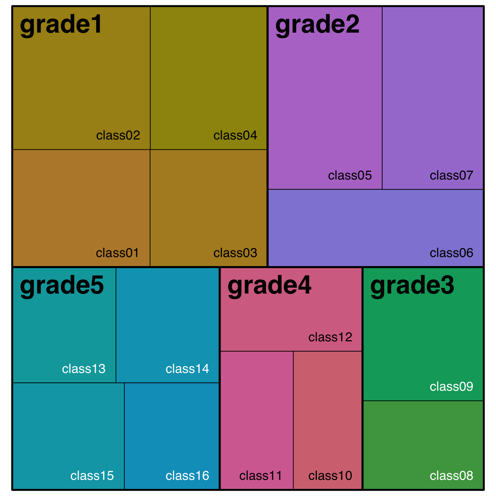
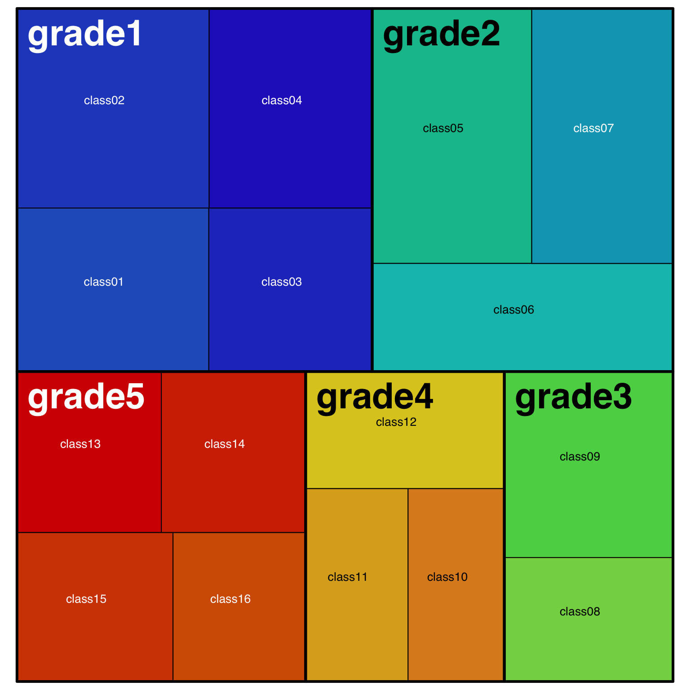

1 Part-to-whole
I’ve been wanting to get more familiar with treemap plots.
1.1 Simulate data
I always like to start my exploration with simulated data. The mixed design simulation functions below are from faux.
Make a school with 5 grades, 1-4 classes per grade, and 15-35 students per class.
Simulate data
| grade | class | student |
|---|---|---|
| grade1 | class01 | student001 |
| grade1 | class01 | student002 |
| grade1 | class01 | student003 |
| grade1 | class01 | student004 |
| grade1 | class01 | student005 |
| grade1 | class01 | student006 |
1.2 Basic Treemap
The basic version is OK, but I think we can do better here.
1.3 Adjust Labels
First, I’ll adjust the label size and alignment. I adapted this code from a book that Emily Nordmann and I recently wrote: Applied Data Skills. For fontsize.labels and align.labels, I added vector names to help me remember which is which, but the names aren’t used by treemap() at all, just the order.
The class labels aligned to the bottom right are too close to the edges, so give them some padding with xmod.labels and ymod.labels. I’m also going to remove the transparent grey label background with bg.labels = 0
Code
school %>%
count(grade, class) %>%
treemap(
index = c("grade", "class"),
vSize = "n",
title = "",
# set different label sizes for each type of label
fontsize.labels = c(grade = 30, class = 15),
# remove shaded background
bg.labels = 0,
# set different alignments for two label types
align.labels = list(
grade = c("left", "top"),
class = c("right", "bottom")
),
xmod.labels = c(0, -.1), # nudge class labels left
ymod.labels = c(0, .1) # nudge class labels up
)
1.4 Colour scheme
I’d like to use the #30DayChartChallenge theme colours for my plots, so let’s set that up. I’m going to name the colours after the chapter they represent.
Plot
school %>%
count(grade, class) %>%
treemap(
index = c("grade", "class"),
vSize = "n",
title = "",
palette = dcc_theme,
fontsize.labels = c(grade = 30, class = 10),
bg.labels = 0,
align.labels = list(
grade = c("left", "top"),
class = c("center", "center")
),
xmod.labels = c(0, -.1),
ymod.labels = c(0, .1)
)
1.5 Change text
Now I want to upgrade the labels. It’s probably easiest to do this in the data using mutate(). I’ll set them to the kind of primary school grade labels we use in Scotland, where each grade is P1, P2, … and each class within a grade gets a letter suffix.
Finally, make the borders thicker. It’s starting to look like a Mondrian!
Code
day1_plot <- school2 %>%
treemap(
index = c("grade", "class"),
vSize = "n",
title = "",
palette = dcc_theme,
fontcolor.labels = "white",
fontsize.labels = c(grade = 30, class = 15),
bg.labels = 0,
align.labels = list(
grade = c("left", "top"),
class = c("right", "bottom")
),
xmod.labels = c(0, -.1),
ymod.labels = c(0, .1),
border.lwds = 5 # thicker borders
)1.6 Saving a treemap
I tried ggsave() first and it took a really long time to save, and then the resulting image was blank. I should remember that not everything is ggplot; the output of the treemap() function is a list that draws a plot as a side effect (unless you set draw = FALSE), so you have to use base R plot saving techniques.
I couldn’t figure out how to re-plot from the day1_plot object, so just had to retype the plot. This didn’t work well in an Rmd code chunk (I think treemap can sense if it’s in a code chunk with inline plot rendering and overrides the dev), so I had to run it in the console.
Save treemap
# open the png file
ragg::agg_png("images/day1.png",
width = 8, height = 4.5,
background = "transparent",
units = "in", res = 150)
# plot the treemap
school2 %>%
treemap(
index = c("grade", "class"),
vSize = "n",
title = "",
palette = dcc_theme,
fontcolor.labels = "white",
fontsize.labels = c(grade = 30, class = 15),
bg.labels = 0,
align.labels = list(
grade = c("left", "top"),
class = c("right", "bottom")
),
xmod.labels = c(0, -.1),
ymod.labels = c(0, .1),
border.lwds = 5 # thicker borders
)
# close the png file
while (!is.null(dev.list())) dev.off()